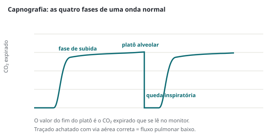

Emergências · 75 min · DAS 2025, SCCM 2023 e AHA 2025 · monografia
Via aérea definitiva no adulto pela Difficult Airway Society 2025, pela SCCM 2023 e pela AHA 2025, com os ensaios PREOXI, DEVICE, BOUGIE, PreVent, PREPARE II, RSI e EvK: indicação, via aérea anatômica e fisiologicamente difícil, pré-oxigenação, doses, videolaringoscopia, capnografia, "não intubo, não oxigeno", hipotensão pós-intubação, extubação de risco e isolamento.
A Difficult Airway Society publicou em novembro de 2025 as diretrizes que substituem as de 2015 para a intubação difícil não prevista no adulto: 65 recomendações, revisão sistemática de 1.241 artigos e Delphi em três rodadas. O foco passou de manejar a falha para maximizar a chance de sucesso. Ensaios pragmáticos em pronto-socorro e UTI responderam, na mesma década, o que antes era opinião:
| Tema | Antes | Agora |
|---|---|---|
| Laringoscópio de primeira escolha | Laringoscopia direta; vídeo como resgate | Videolaringoscopia de primeira linha (DAS 2025), apoiada pelo DEVICE: sucesso na primeira tentativa de 85,1% contra 70,8% |
| Oxigenação | Pré-oxigenar e depois "correr" contra a dessaturação | Oxigênio contínuo durante todo o manejo ("peroxigenação": antes, durante a apneia e entre as tentativas) |
| Pré-oxigenação no crítico | Máscara com reservatório para todos | Ventilação não invasiva reduz hipoxemia à metade (PREOXI); SCCM sugere VNI se PaO₂/FiO₂ < 150 e alto fluxo se a laringoscopia promete ser difícil |
| Bolsa-máscara entre indução e laringoscopia | Evitar, pelo medo de aspiração | Ventilação com bolsa-máscara reduziu hipoxemia grave de 22,8% para 10,9% sem aumentar aspiração (PreVent) |
| Hipnótico no choque | Cetamina "porque sustenta a pressão"; etomidato "porque suprime a adrenal" | Ensaio RSI (2.365 pacientes): mortalidade igual, e mais colapso cardiovascular com cetamina (22,1% contra 17,0%) |
| Bloqueio neuromuscular | Tardio, "para não queimar a ponte" | Bloqueio precoce e completo (DAS 2025); SCCM recomenda bloqueador sempre que se usa hipnótico |
| Acesso cirúrgico de emergência | Bisturi, bougie e tubo, com incisão transversa se a membrana é palpável | Bisturi, bougie e tubo com incisão vertical padronizada |
Via aérea definitiva é um tubo na traqueia com balonete insuflado, fixado e conectado a uma fonte de oxigênio. A indicação responde a quatro perguntas, e basta uma resposta afirmativa:
"Intubar cedo" não é "intubar por reflexo". No INTUBE (2.964 intubações em 197 UTIs de 29 países), 45,2% tiveram evento adverso maior nos primeiros 30 minutos: instabilidade cardiovascular em 42,6%, hipoxemia grave em 9,3% e parada em 3,1%.
"Difícil" tem quatro sentidos: difícil de laringoscopar, de ventilar com bolsa-máscara, de posicionar um supraglótico e de acessar o pescoço. Avaliar os quatro responde se os planos B, C e D existem neste paciente. Laringoscopia difícil somada a ventilação difícil é o caminho para o "não intubo, não oxigeno".
| Dificuldade | Mnemônico | Preditores |
|---|---|---|
| Laringoscopia | LEMON | Look: olhar externo (trauma de face, pescoço curto, retrognatia). Evaluate 3-3-2: abertura oral de 3 dedos, mento-hioide de 3 dedos, hioide-tireoide de 2 dedos. Mallampati III ou IV. Obstrução (voz abafada, estridor, sialorreia) e obesidade. Neck: mobilidade cervical reduzida (colar, espondilite) |
| Bolsa-máscara | MOANS (ou ROMAN) | Mask seal: barba, trauma, sonda. Obesidade e obstrução (apneia do sono, angioedema). Age acima de 55 anos. No teeth: edentado (gaze entre as gengivas ajuda a vedar). Stiff: pulmão rígido ou resistência alta (asma, DPOC, SDRA, gestação) |
| Supraglótico | RODS | Restrição da abertura oral. Obstrução ou obesidade. Distorção da anatomia (o dispositivo não veda). Stiff: pulmão rígido ou coluna cervical fixa; algumas versões usam distância tireomentoniana curta, o preditor mais forte num registro de 14.480 pacientes |
| Acesso cervical | SHORT (ou SMART) | Surgery prévia ou via aérea desestruturada. Hematoma ou infecção cervical. Obesidade e acesso difícil (membrana impalpável). Radioterapia prévia (planos aderidos). Tumor |
A validação desses mnemônicos é escassa (o LEMON teve sensibilidade de 86% num registro japonês de 3.313 intubações), e o Mallampati exige paciente sentado e cooperativo, o que metade dos intubados no pronto-socorro não é. A regra de trabalho do manual da FMUSP: na emergência, toda intubação é potencialmente difícil. Na UTI existe escore validado, o MACOCHA (De Jong, 2013): com corte de 3 pontos, sensibilidade de 73%, especificidade de 89% e valor preditivo negativo de 98%. O operador não anestesiologista pontua; habilidade é preditor.
| Item do MACOCHA | Pontos |
|---|---|
| Mallampati III ou IV | 5 |
| Apneia obstrutiva do sono | 2 |
| Mobilidade reduzida da Coluna cervical | 1 |
| Abertura da bOca menor que 3 cm | 1 |
| Coma | 1 |
| Hipoxemia grave (SpO₂ < 80%) | 1 |
| Operador não Anestesiologista | 1 |
| Total possível; 3 ou mais indica intubação difícil | 12 |
Durante a laringoscopia, a classificação de Cormack-Lehane descreve o que se vê: grau 1, glote inteira; 2, glote parcial (2a) ou só aritenoides e comissura posterior (2b); 3, só a epiglote; 4, nem epiglote. Graus 2b e 3 são o território do bougie e da videolaringoscopia. Com lâmina hiperangulada, a glote quase sempre aparece e o problema passa a ser entregar o tubo: o acessório é o fio-guia rígido com a curvatura da lâmina.
Prever também decide a técnica. Com via aérea muito difícil prevista e ventilação de resgate provavelmente impossível (tumor de laringe, abscesso com trismo, angioedema grave), o bloqueio retira a respiração espontânea que ainda mantém o paciente vivo. As opções são intubação acordado com anestesia tópica, a via aérea cirúrgica planejada com anestesia local, ou a intubação no centro cirúrgico com o otorrinolaringologista presente. Nenhum preditor normal dispensa o plano B: a intubação difícil não prevista é justamente o objeto da DAS 2025.
Anatomia perfeita não impede a morte na intubação. Mosier e colaboradores (2015) chamaram de via aérea fisiologicamente difícil aquela em que o distúrbio fisiológico aumenta o risco de colapso na indução, na apneia e na passagem para pressão positiva; a DAS 2025 fez dela domínio próprio de recomendações. São quatro condições:
| Condição | Por que a intubação piora | O que muda na conduta |
|---|---|---|
| Hipoxemia | Shunt e pouca reserva: na pneumonia extensa a dessaturação vem em menos de um minuto de apneia | Pré-oxigenar com VNI, oxigênio na apneia, bolsa-máscara entre indução e laringoscopia, operador mais experiente |
| Hipotensão | O hipnótico retira o tônus simpático de que o choque compensado depende; a pressão positiva reduz o retorno venoso | Ressuscitar antes, vasopressor pronto ou correndo, hipnótico reduzido, bloqueador em dose plena |
| Acidose metabólica grave | A compensação depende de ventilação-minuto altíssima; a apneia e um ventilador "de rotina" elevam a PaCO₂ e derrubam o pH | Apneia curta, ventilar durante a apneia, ventilação-minuto alta após o tubo, gasometria precoce |
| Falência do ventrículo direito | Hipoxemia, hipercapnia e pressão intratorácica elevam a pós-carga do VD; a hipotensão reduz a perfusão coronária dele | Evitar hipotensão (vasopressor antes da indução), hipoxemia e hipercapnia; PEEP moderada; cautela com volume |
O manual da FMUSP usa o mnemônico CRASH: Consumo de oxigênio aumentado, Right ventricular failure, Acidose, Saturação baixa, Hipotensão. Em estudos observacionais de pronto-socorro, sistólica abaixo de 100 mmHg, SpO₂ abaixo de 90% e intubação sem tempo de preparo associaram-se a parada peri-intubação (April, 2021), e o índice de choque (frequência cardíaca sobre sistólica) acima de 0,9 foi marcador independente (Heffner).
A DAS 2025 trata fatores humanos como recomendação: briefing, papéis definidos, plano verbalizado e lista de verificação. Os "sete P" seguem como roteiro: preparo, pré-oxigenação, pré-tratamento e otimização, paralisia com indução, posicionamento, passagem com confirmação e pós-intubação.
Posicionamento é a intervenção mais barata e mais esquecida. A SCCM sugere semi-Fowler (condicional, evidência baixa): aumenta a capacidade residual funcional, prolonga a apneia segura e reduz regurgitação. No obeso, a rampa alinha o meato acústico com a fúrcula esternal. Na laringoscopia direta, a posição olfativa alinha os eixos oral, faríngeo e laríngeo. No trauma cervical, a parte anterior do colar sai e um auxiliar faz a estabilização manual em linha (ATLS).
flowchart TD A["Indicação de via aérea
definitiva"] --> B["Avaliar anatomia
LEMON · MOANS
RODS · SHORT"] B --> C{"Ventilação de resgate
provavelmente impossível?"} C -->|"sim"| D["Intubação acordado
ou via aérea cirúrgica
planejada com ajuda"] C -->|"não"| E["Avaliar fisiologia
hipoxemia · hipotensão
acidose · VD"] E --> F{"Alguma
presente?"} F -->|"sim"| G["Otimizar antes
VNI · vasopressor
drenar tórax"] F -->|"não"| H["Sequência rápida
com plano A a D
anunciado"] G --> H
A pré-oxigenação troca o nitrogênio da capacidade residual funcional por oxigênio. A apneia segura (até a SpO₂ cair abaixo de 90%) chega a cerca de 10 minutos no adulto saudável e cai para menos de um minuto na pneumonia extensa, porque o sangue que passa por alvéolo sem ventilação não recebe o oxigênio oferecido (shunt). A técnica mínima é FiO₂ próxima de 100% por 3 a 5 minutos, ou 8 respirações de capacidade vital em quem coopera. A máscara não reinalante só entrega FiO₂ alta com o fluxômetro aberto no máximo; a 15 L/min ela arrasta ar ambiente. No crítico, três ensaios organizam a escolha:
A SCCM transformou isso em duas sugestões condicionais (evidência baixa): cateter nasal de alto fluxo quando a laringoscopia promete ser difícil, porque ele continua oxigenando durante a apneia e permite laringoscopia mais longa, e VNI quando a hipoxemia é grave, com PaO₂/FiO₂ abaixo de 150, porque a pressão positiva recruta o pulmão com shunt. Na prática, o PREOXI favorece a VNI para a maioria dos críticos hipoxêmicos; o alto fluxo entra quando a VNI não é tolerada ou quando o problema maior é a laringoscopia demorada.
Oxigenação apneica é manter oxigênio pelo nariz durante a apneia: o alvéolo continua absorvendo oxigênio e puxa gás das vias aéreas. O cateter nasal comum a 15 L/min sob a máscara, mantido na laringoscopia, é a técnica NO DESAT (nasal oxygen during efforts securing a tube). No crítico a evidência é mista: no ENDAO (150 pacientes de UTI, alto fluxo a 15 L/min), menor saturação de 92% contra 90%, sem diferença significativa. Funciona onde há alvéolo aberto e pouco no shunt. É barata, faz parte do oxigênio contínuo da DAS 2025, e não substitui a pré-oxigenação com pressão positiva no hipoxêmico grave.
O paciente agitado que arranca a máscara não se pré-oxigena. A SCCM sugere pré-oxigenação assistida por medicação (condicional, evidência muito baixa), a sequência atrasada: cetamina iniciada em 0,5 mg/kg, lenta, titulada até 1 a 2 mg/kg, preserva o drive e permite máscara ou VNI por alguns minutos antes do bloqueador, com a equipe pronta para converter em sequência rápida.
Sequência rápida é a administração quase simultânea de hipnótico e bloqueador neuromuscular de início rápido, sem titulação. A SCCM recomenda bloqueador sempre que se usa hipnótico (forte, evidência baixa), porque ele melhora a visão laríngea e o sucesso na primeira tentativa; a DAS 2025 pede bloqueio precoce e completo. O contrário, bloqueador sem hipnótico mesmo no chocado, expõe a consciência sob paralisia.
Etomidato ou cetamina. Duas crenças dominavam: o etomidato mataria pela supressão adrenal, a cetamina protegeria a pressão. O EvK (801 pacientes, centro único) achou sobrevida em 7 dias maior com cetamina (85,1% contra 77,3%), sem diferença em 28 dias. O RSI (2.365 pacientes, 14 prontos-socorros e UTIs) respondeu com poder: morte em 28 dias de 28,1% com cetamina e 29,1% com etomidato, sem diferença em subgrupo algum, inclusive 1.101 sépticos. E inverteu a crença hemodinâmica: colapso cardiovascular em 22,1% com cetamina e 17,0% com etomidato, 30,6% contra 20,9% nos sépticos. A SCCM já sugeria não haver diferença entre etomidato e outros hipnóticos (condicional, moderada) e sugere não dar corticoide após etomidato (condicional, baixa). Os dois servem no instável, em dose reduzida; a cetamina não é a escolha automática do chocado.
Succinilcolina ou rocurônio. A SCCM sugere qualquer um se não houver contraindicação à succinilcolina (condicional, baixa). No CURASMUR (1.248 intubações pré-hospitalares), o rocurônio 1,2 mg/kg não demonstrou não inferioridade à succinilcolina 1 mg/kg (sucesso na primeira tentativa de 74,6% contra 79,4%). O rocurônio não tem as contraindicações da succinilcolina e mantém a paralisia numa laringoscopia longa ou no pescoço; em troca, exige sedação contínua logo após o tubo.
| Succinilcolina: contraindicações | Mecanismo |
|---|---|
| Suscetibilidade pessoal ou familiar à hipertermia maligna | Gatilho da crise; tratamento com dantrolene |
| Miopatias (distrofias musculares), sobretudo a não diagnosticada na criança (alerta em caixa da bula) | Rabdomiólise aguda com hipercalemia e parada |
| Fase após a lesão aguda de grande queimadura, trauma extenso, desnervação ou lesão de neurônio motor superior (AVC, lesão medular, Guillain-Barré) | Receptores de acetilcolina extrajuncionais; a bula descreve risco que costuma ser máximo de 7 a 10 dias após a lesão; o manual da FMUSP evita a partir do terceiro dia |
| Doença neuromuscular progressiva (esclerose lateral amiotrófica) | Mesmo mecanismo de proliferação de receptores |
| Hipercalemia estabelecida e rabdomiólise | A succinilcolina eleva o potássio em até 0,5 mEq/L no paciente normal; nas situações acima, a elevação é muito maior |
Doença renal crônica, por si, não contraindica; com potássio alto, rocurônio. Fentanil não é de rotina (pode atenuar a resposta simpática na hemorragia intracraniana e na dissecção de aorta, ao custo de hipotensão). A pressão cricoide perdeu sustentação: no IRIS (3.472 pacientes), a manobra simulada não demonstrou não inferioridade para aspiração (0,5% contra 0,6%), e a pressão verdadeira dobrou Cormack 3 e 4 (10% contra 5%). Se aplicada, é liberada quando atrapalha.
O indicador que organiza a técnica é o sucesso na primeira tentativa: cada nova laringoscopia soma edema, sangramento, dessaturação e hipotensão. No DEVICE (1.417 críticos em pronto-socorro e UTI, 91,5% das intubações feitas por residentes de emergência ou fellows de terapia intensiva), o videolaringoscópio deu sucesso na primeira tentativa em 85,1% contra 70,8% da laringoscopia direta, sem diferença de complicações graves (21,4% contra 20,9%) nem de intubação esofágica, trauma dentário ou aspiração. O ensaio parou na análise interina por eficácia. A DAS 2025 fez do videolaringoscópio a primeira escolha na intubação sob anestesia.
O bougie tem dois ensaios que parecem se contradizer. No BEAM (2018, um pronto-socorro, lâmina Macintosh), o bougie de rotina aumentou o sucesso na primeira tentativa de 87% para 98%, e de 82% para 96% nos pacientes com algum preditor de dificuldade. No BOUGIE (2021, 1.106 críticos em pronto-socorro e UTI), não houve ganho: 80,4% com bougie contra 83,0% com tubo e fio-guia. A leitura coerente é que o bougie é ferramenta de quem treina com ele e de visão parcial (Cormack 2b e 3), não amuleto universal. Os cliques dos anéis traqueais e a parada do bougie na carina ou no brônquio distinguem traqueia de esôfago.
A DAS 2025 limita o plano A a três tentativas de laringoscopia, mais uma quarta por operador mais experiente, e exige que cada tentativa seja diferente da anterior: trocar operador, lâmina ou dispositivo, reposicionar, aplicar manipulação laríngea externa, usar bougie ou fio-guia, completar o bloqueio. Entre tentativas, reoxigenar.
Ausculta, embaçamento do tubo, expansão do tórax e até a visão do tubo passando pelas cordas enganam. A capnografia com onda não engana na direção que mata: tubo esofágico não produz curva sustentada de CO₂ ao longo de várias ventilações. A DAS 2025 põe a confirmação por capnografia entre suas prioridades, e a AHA mantém a recomendação.
| Recomendação (AHA 2025, Parte 9) | Classe |
|---|---|
| Capnografia de onda contínua, somada à avaliação clínica, é o método mais confiável para confirmar e monitorizar a posição do tubo traqueal | 1C-LD |
| Experiência frequente ou retreinamento para quem intuba na parada | 1B-NR |

Duas situações confundem. Na parada, o fluxo pulmonar é tão baixo que a curva pode ser achatada com o tubo correto (a sensibilidade cai, a especificidade não; ver a leitura de parada cardiorrespiratória). E o tubo esofágico pode mostrar uma ou duas ondas pequenas e decrescentes, de CO₂ insuflado no estômago, que somem em poucas ventilações. Na dúvida, retirar o tubo e ventilar.
Confirmado o tubo: balonete a 20 a 30 cmH₂O medidos, fixação, altura registrada e radiografia para profundidade, intubação seletiva e pneumotórax. A ponta fica alguns centímetros acima da carina; flexão e extensão do pescoço a movem cerca de 2 cm. Em seguida, sedação e analgesia contínuas e ventilação protetora (leitura de ventilação mecânica).
A DAS 2025 manteve o algoritmo linear de quatro planos, agora com o oxigênio contínuo como fio condutor e o limite de tentativas explícito em cada degrau:
flowchart TD A["Plano A: videolaringoscopia
até 3 + 1 tentativas
oxigênio contínuo"] --> B{"Intubou?"} B -->|"sim"| C["Confirmar com
capnografia"] B -->|"não"| D["Declarar falha
Plano B: supraglótico
2ª geração, até 3"] D --> E{"Oxigena?"} E -->|"sim"| F["Parar e pensar
acordar, intubar pelo
dispositivo ou pescoço"] E -->|"não"| G["Plano C: máscara
a duas pessoas
bloqueio completo"] G --> H{"Oxigena?"} H -->|"sim"| F H -->|"não"| I["Declarar
não intubo, não oxigeno"] I --> J["Plano D: bisturi,
bougie e tubo"]
A técnica do plano D é bisturi, bougie e tubo, pela membrana cricotireóidea, com o pescoço estendido. A DAS 2025 padronizou a incisão vertical na linha média (antes, a incisão transversa era usada quando a membrana era palpável), porque ela funciona com membrana palpável ou não e permite palpar por dentro. Sequência: fixar a laringe com a mão não dominante, incisão vertical da pele, dissecção romba até a membrana, incisão transversa da membrana, rotação da lâmina, bougie pela lâmina até a traqueia, tubo com balonete de pequeno calibre (6,0 mm é o clássico) sobre o bougie, e capnografia. Ultrassom antes da indução, quando o tempo permite, marca a membrana nos pescoços difíceis de palpar. A técnica com cânula foi abandonada por falhar com frequência e não permitir ventilação eficaz.
O erro mais comum não é técnico: é demorar a declarar a falha. O Vortex (Chrimes, 2016) é um auxílio visual para esse momento: três vias de resgate (tubo, supraglótico, máscara) em torno de uma zona verde de oxigenação; esgotadas as tentativas otimizadas das três sem oxigenar, o funil leva ao centro, o acesso cirúrgico. Todos veem o mesmo mapa e sabem quando se chegou ao fim.
Os dispositivos de segunda geração têm canal de drenagem gástrica e vedação mais alta, e são os recomendados como plano B e como ponte. Oxigenam entre tentativas, resgatam e servem de conduto para intubação por fibroscópio. Não protegem de aspiração como o tubo e vedam mal com pressão de via aérea alta ou anatomia distorcida (RODS). Na parada extra-hospitalar, a AHA 2025 os considera aceitáveis quando a taxa de sucesso de intubação do serviço é baixa (2a, B-R), e equivalentes ao tubo quando é alta; o detalhamento está na leitura de parada cardiorrespiratória.
A diretriz da Society of Critical Care Medicine de 2023 é a única que trata especificamente da sequência rápida no adulto grave. Das 35 perguntas propostas, o painel respondeu 10, com uma recomendação forte, sete sugestões e duas declarações de boa prática; numa pergunta (vasopressor peri-intubação) não houve evidência para recomendar.
| Pergunta | Posição da SCCM 2023 | Força (GRADE) |
|---|---|---|
| Posição | Semi-Fowler durante a sequência rápida | Condicional, baixa |
| Pré-oxigenação | Alto fluxo se laringoscopia difícil; VNI se PaO₂/FiO₂ < 150 | Condicional, baixa |
| Paciente agitado | Pré-oxigenação assistida por medicação | Condicional, muito baixa |
| Sonda gástrica antes | Descomprimir quando o benefício supera o risco | Boa prática |
| Vasopressor contra volume no hipotenso | Evidência insuficiente para recomendar | Sem recomendação |
| Hipnótico com bloqueador | Sempre associar hipnótico ao bloqueador | Sem graduação transcrita |
| Etomidato contra outros hipnóticos | Sem diferença em mortalidade, hipotensão ou vasopressor | Condicional, moderada |
| Corticoide após etomidato | Não administrar | Condicional, baixa |
| Uso de bloqueador | Usar bloqueador quando se usa hipnótico | Forte, baixa |
| Rocurônio ou succinilcolina | Qualquer um, se não houver contraindicação à succinilcolina | Condicional, baixa |
Somados os ensaios de 2019 a 2025, a rotina do crítico fica: cabeceira elevada, VNI no hipoxêmico, oxigênio nasal mantido, bolsa-máscara entre indução e laringoscopia, videolaringoscópio, bloqueador em dose plena, hipnótico reduzido, capnografia e plano hemodinâmico antes das drogas.
A instabilidade cardiovascular é o evento adverso mais frequente da intubação do crítico (42,6% no INTUBE). Quatro mecanismos se somam: o hipnótico (vasodilatação, inotropismo negativo, perda do tônus simpático que sustentava a pressão), a pressão positiva (menos retorno venoso, mais pós-carga do VD), a hipovolemia que a respiração espontânea mascarava e as complicações mecânicas (autoPEEP, pneumotórax hipertensivo).
O volume preventivo não funcionou: no PrePARE (337 pacientes) e no PREPARE II (1.065), o bólus de cristaloide antes da indução não reduziu o colapso (21,0% contra 18,2% no segundo). O vasopressor tem lógica melhor (age em minutos, é titulável, não sobrecarrega), mas nenhum ensaio provou desfecho, e a SCCM declarou evidência insuficiente. Para o paciente em risco (sistólica abaixo de 100, índice de choque acima de 0,9, choque em curso, VD falente), o manual da FMUSP e Mosier propõem vasopressor precoce: noradrenalina em infusão antes da indução, ou ao menos conectada, e volume para quem tem hipovolemia real. Bólus de vasopressor exige quem conheça a diluição.
flowchart TD A["PA cai após
intubar e ventilar"] --> B{"Capnografia
com curva?"} B -->|"não"| C["Tubo fora ou
parada: retirar,
ventilar, checar pulso"] B -->|"sim"| D{"Obstrutivo ou
pressões altas?"} D -->|"sim"| E["Desconectar do
ventilador 20 a 30 s
pensar em autoPEEP"] E --> F{"PA volta?"} F -->|"não"| G["Pneumotórax?
ultrassom e
descompressão"] D -->|"não"| H["Efeito de droga e
pressão positiva:
noradrenalina, volume
se hipovolêmico"] F -->|"sim"| I["Reduzir frequência
e volume, alongar
expiração"]
Extubar pode gerar a intubação de emergência mais difícil do dia: edema, sangue, paciente agitado e dessaturando. A DAS (2012) separa a extubação de baixo risco da de risco: via aérea que foi difícil, acesso limitado depois (cirurgia de cabeça e pescoço, colar), edema previsto ou pouca reserva. No de risco: otimizar, extubar com equipe e material de reintubação à beira do leito e, em casos selecionados, técnicas avançadas (troca por máscara laríngea, remifentanil, cateter trocador de via aérea).
Na UTI, a decisão segue o teste de respiração espontânea e os critérios da leitura de ventilação mecânica. Dois pontos são da via aérea: pela diretriz ATS/ACCP de 2017, fazer teste de vazamento do balonete nos pacientes que preenchem critérios de extubação mas têm alto risco de estridor pós-extubação, e, se o teste falhar, dar corticoide sistêmico pelo menos 4 horas antes de extubar (ambas condicionais), sem repetir o teste. E o suporte depois do tubo: no HIGH-WEAN (641 pacientes com mais de 65 anos ou doença cardíaca ou respiratória), alto fluxo alternado com VNI logo após a extubação reduziu a reintubação em 7 dias de 18,2% para 11,8% em relação ao alto fluxo isolado.
O consenso de 2020 da DAS com as sociedades britânicas de anestesia e terapia intensiva é o modelo para qualquer patógeno de transmissão aérea: equipamento de proteção para aerossol em todo manejo da via aérea; o operador mais apropriado para acertar na primeira tentativa, não o que precisa treinar; videolaringoscópio, com o operador o mais longe possível da boca; pré-oxigenação cuidadosa por 3 a 5 minutos com máscara bem vedada em circuito fechado, evitando alto fluxo e VNI por gerarem aerossol; ventilação com máscara reduzida ao mínimo, com supraglótico de segunda geração como resgate entre tentativas; sequência rápida com bloqueio pleno (o texto cita cetamina 1 a 2 mg/kg e rocurônio 1,2 mg/kg) para evitar tosse; filtro trocador de calor e umidade no circuito; balonete insuflado a 20 a 30 cmH₂O antes de ventilar; confirmação por capnografia; e, no plano D, bisturi, bougie e tubo. Fora do isolamento o PREOXI favorece a VNI; em isolamento, VNI com filtro ou máscara vedada é decisão local entre oxigenação e exposição da equipe.